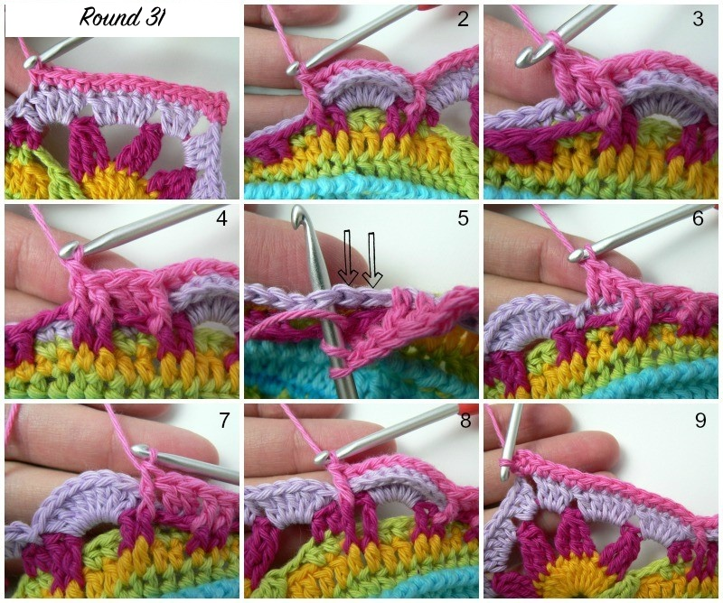
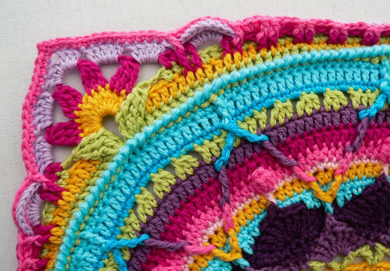
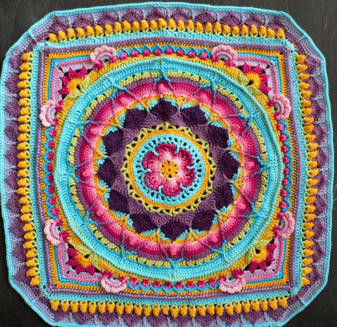
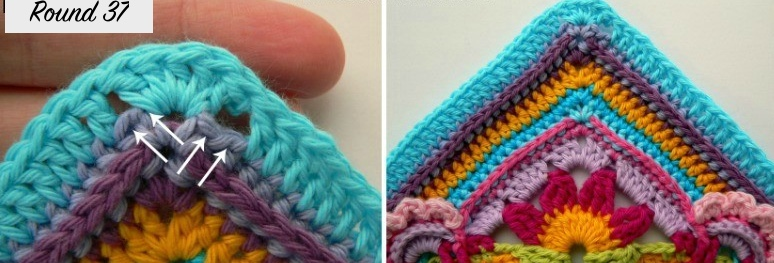
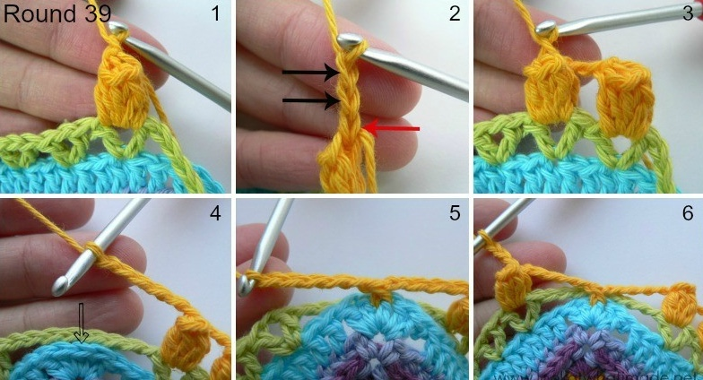

Round 31
If using the same colour, sl st into the next 2 dc and into the corner ch-2 space. (Ch 1, sc, ch 2, sc) into the same space.
If using a new colour, make a standing sc in any corner ch-2 space. (Ch 2, sc) in the same space.
*Sc in the next 12 dc. Skip the next dc and fpdc around the first fptr of Round 29. Bpsc in each of the 8 dc of the half-circle from Round 30. Skip the next fpdc from Round 29 and fpdc around the next fpdc. Dc in the next 2 sc of Round 30 behind the next ch-2 space of Round 29. Fpdc around the next 2 fpdc of Round 29 and skip the next 2 st of Round 30.
Hdc in the next 2 st of Round 30. Fphdc around the next 2 fpdc of Round 29 and skip the next 2 sc of Round 30.
(Sc in the next 2 st of Round 30. Fpsc around the next 2 fpdc of Round 29 and skip the next 2 sc of Round 30) 4 times. Sc in the next 2 st of Round 30.
Fphdc around the next 2 fpdc of Round 29 and skip the next 2 sc from Round 30. Hdc in the next 2 st of Round 30. Fpdc around the next 2 fpdc of Round 29 and skip the next 2 st of Round 30. Dc in the next 2 st of Round 30.
Fpdc around the next fpdc from Round 29. Bpsc in each of the 8 dc of the half-circle from Round 30. Skip the next fptr from Round 29 and fpdc around the next fptr. Skip the next dc from Round 30 and sc in the next 12 dc. (Sc, ch 2, sc) in the corner ch-2 space.*
Repeat from * to * 3 more times, omitting the last corner on the last repeat. Join with sl st.
Stitch Count: Total: 320 st and 4 ch-2 spaces. Per side: 80 st.
 Round 32
If using the same colour, sl st into the corner. (Ch 1, sc, ch 2, sc) in the same space.
If changing colour, make a standing sc in any corner. (Ch 2, sc) in the same space.
*Bpsc in the next 12 st. Bphdc in the next st. Make 3 tr in each of the next 2 ch-2 spaces from Round 28. Skip 8 bpsc and the next fpdc. Sc in each of the next 34 st.
Make 3 tr in the next 2 ch-2 spaces from Round 28. Skip 8 bpsc and the next fpdc. Bphdc in the next st. Bpsc in the next 12 st. (Sc, ch 2, sc) in the corner.*
Repeat 3 more times omitting the last corner. Join and fasten.
Stitch Count: Total 296 st. Per side 74.
Round 33If using same colour, sl st into corner. (Ch 1, sc, ch 2, sc).
If changing, standing sc in corner. (Ch 2, sc).
*Sc in the next 20 st.
(Ch 3, sl st in next ch-2 space from Round 29. Ch 3, skip 3 st, sc in the next st) 9 times.
Sc in the next 18 st. (Sc, ch 2, sc) in corner.*
Repeat 3 more times omitting last corner. Join.
Stitch Count: Total 196 sc and 32 zigzags.

Round 34
If same colour, sl st corner. (Ch 2, hdc, ch 2, 2 hdc). If new colour, standing hdc in corner (hdc, ch 2, 2 hdc).
*Skip first st, hdc 20. (Hdc 3, bpsc in next sc repeat) 8 times. Hdc 3. Hdc 20. (2 hdc, ch 2, 2 hdc) in corner.*
Repeat 3 more times omitting last corner. Join.
Stitch Count: 284 hdc and 4 corner spaces.
Round 35Standing hdc in corner (hdc, ch 2, 2 hdc).
*Skip 1, hdc 18. Bpdc around 4th bpsc of petal. Skip 1, hdc 40. Bpdc around 4th bpsc. Skip 1, hdc 18. Corner.*
Repeat 3 more times omitting last corner. Join.
Stitch Count: 328 st and 4 ch-2.

Round 36
If same colour, sl st into corner, (Ch 1, sc, ch 2, sc).
If new, standing sc, (Ch 2, sc).
*Bphdc in each of 82 st. Corner.*
Repeat 3 more times omitting last corner. Join.
Stitch Count: 336 st.
Optional Flowers
Join yarn to first bpsc of any petal. (4 hdc in next st, sl st in next st) 4 times. Repeat for all petals.
Optional Flowers
These flowers will be made into the bpsc’s of the 8-dc “petals” formed by Rounds 30 and 31. If you think this makes the corners look too busy, feel free to leave them out. You can make all the flowers in the same colour, or each one in a different colour. It is totally up to you.
And if you feel like making totally different flowers, that’s also fine!
Join your yarn to the first bpsc (Round 31) of any 8-dc “petal” from Round 30 with a sl st. Make 4 hdc’s in the next stitch, then sl st in the next stitch. Repeat this four times. The last sl st should fall in the top of the fpdc after the petal. Bind off and work away your tails of yarn.
Repeat for each of the 8 “petals” from Rounds 30 and 31.

Special Stitches
Popcorn Stitch: 5 dc in same st, remove hook, insert into first dc, pull last through, ch 1.
Beginning Popcorn: Ch 3, 4 dc in same, remove hook, insert in 3rd ch, pull through, ch 1.
V-Stitch: (Dc, ch 1, dc) in same st.
Picot: Ch 3, sl st in 3rd ch.
Round 37
Standing dc in corner (dc, hdc, 2 dc).
*Skip 2, dc 80, skip 2. Corner.*
Repeat 3 more times, omit last corner, join.
Stitch Count: 340 st total.
Round 38 – Leaves
Standing dc in 5th dc of any side (ch 1, dc) same st.
(Skip 2, V-st in next st) 25 times.
There will be 4 dc left before corner.
*Short side: Ch 8 skip 9.
Long side: V-st in 5th dc, repeat 25 times.*
Repeat 3 more times omitting last side. Join.
Stitch Count: 104 V-st and 4 ch-8 spaces.
Round 39 – Tulips
If same colour, sl st into ch-1, beginning popcorn.
If new, standing dc, popcorn in same space.
(Ch 2, popcorn in next V-st) 25 times.
*Short side: Ch 5, fpsc around corner hdc, ch 5.
Long side: popcorn in next V-st, repeat 25 times.*
Repeat 3 more times, join.
Stitch Count: 108 st, 8 ch-5, 100 ch-2.
Round 40
If same colour: sl st into ch-2, (ch1, sc), dc between V, sc.
If new: standing sc in ch-2, dc between V, sc.
(Skip popcorn, sc, dc between V, sc) 24 times.
*Short side: 4 sc, dc and hdc across corner, sc in top fpsc, 4 sc.
Long side: (Skip popcorn, sc, dc between V, sc) 25 times.*
Repeat 3 more times, join and fasten.
Stitch Count: 356 st.